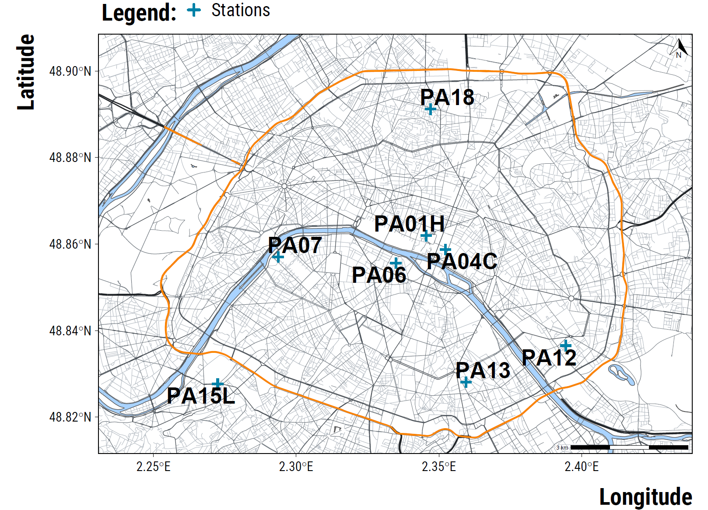

Required Packages
We load the required packages:
We also load our custom ggplot2 theme for graphs:
Cleaning Air Pollution Data
Air pollution data comes from the background measuring stations of the Airparif. Using OpenStreetMap data and the osmdata package, we map below their location (see the script script_map_paris.R located in the “inputs/2.functions” folder for the code to reproduce the map). NO\(_{2}\) concentrations are measured at stations PA07, PA12, PA13, PA18; O\(_{3}\) concentrations at PA13, PA18; PM\(_{10}\) at PA18; PM\(_{2.5}\) at PA01H and PA04C. Grey lines represent the road network. The orange line is the orbital ring surrounding Paris. Blue crosses are the locations of air pollution measuring stations.

We load and clean NO\(_{2}\) data:
# clean no2 data
data_no2 <-
data.table::fread(
here::here(
"inputs", "1.data",
"1.air_pollutants_data",
"20080101_20200901-NO2_auto.csv"
),
check.names = TRUE
) %>%
select(date, heure, PA01H, PA04C, PA06, PA07, PA12, PA13, PA15L, PA18) %>%
# drop first line
slice(-1) %>%
# paste the elements of date together
mutate(date = paste(date, heure, sep = "/")) %>%
# convert to date
mutate(date = lubridate::dmy_h(date)) %>%
select(-heure) %>%
rename_all( ~ tolower(.)) %>%
mutate_at(vars(-date), ~ as.numeric(.)) %>%
filter(date > "2008-01-01 00:00:00" &
date <= "2019-01-01 00:00:00")
# select relevant measuring stations
data_no2 <- data_no2 %>%
select(date, pa07, pa12, pa13, pa18) %>%
rename_at(vars(-date), ~ paste("mean_no2", ., sep = "_"))
We load and clean O\(_{3}\) data:
# clean o3 data
data_o3 <-
data.table::fread(
here::here(
"inputs", "1.data",
"1.air_pollutants_data",
"20080101_20200901-O3_auto.csv"
),
check.names = TRUE
) %>%
select(date, heure, PA01H, PA04C, PA06, PA13, PA18) %>%
# drop first line
slice(-1) %>%
# paste the elements of date together
mutate(date = paste(date, heure, sep = "/")) %>%
# convert to date
mutate(date = lubridate::dmy_h(date)) %>%
select(-heure) %>%
rename_all( ~ tolower(.)) %>%
mutate_at(vars(-date), ~ as.numeric(.)) %>%
filter(date > "2008-01-01 00:00:00" &
date <= "2019-01-01 00:00:00")
# select relevant measuring stations
data_o3 <- data_o3 %>%
select(date, pa13, pa18) %>%
rename_at(vars(-date), ~ paste("mean_o3", ., sep = "_"))
We load and clean PM\(_{10}\) data:
# clean pm10 data
data_pm10 <-
data.table::fread(
here::here(
"inputs", "1.data",
"1.air_pollutants_data",
"20080101_20200901-PM10_auto.csv"
),
check.names = TRUE
) %>%
select(date, heure, PA01H, PA04C, PA15L, PA18) %>%
# drop first line
slice(-1) %>%
# paste the elements of date together
mutate(date = paste(date, heure, sep = "/")) %>%
# convert to date
mutate(date = lubridate::dmy_h(date)) %>%
select(-heure) %>%
rename_all( ~ tolower(.)) %>%
mutate_at(vars(-date), ~ as.numeric(.)) %>%
filter(date > "2008-01-01 00:00:00" &
date <= "2019-01-01 00:00:00")
# select relevant measuring stations
data_pm10 <- data_pm10 %>%
select(date, pa18) %>%
rename_at(vars(-date), ~ paste("mean_pm10", ., sep = "_"))
We load and clean PM\(_{2.5}\) data:
# clean pm2.5 data
data_pm25 <-
data.table::fread(
here::here(
"inputs", "1.data",
"1.air_pollutants_data",
"20080101_20200901-PM25_auto.csv"
),
check.names = TRUE
) %>%
select(date, heure, PA01H, PA04C) %>%
# drop first line
slice(-1) %>%
# paste the elements of date together
mutate(date = paste(date, heure, sep = "/")) %>%
# convert to date
mutate(date = lubridate::dmy_h(date)) %>%
select(-heure) %>%
rename_all( ~ tolower(.)) %>%
mutate_at(vars(-date), ~ as.numeric(.)) %>%
filter(date > "2008-01-01 00:00:00" &
date <= "2019-01-01 00:00:00") %>%
pivot_longer(cols = -c(date),
names_to = "variable",
values_to = "concentration") %>%
group_by(date) %>%
summarise(mean_pm25 = mean(concentration, na.rm = TRUE))
Merge all pollutants variables together:
# merge pollutants
data_pollutants <- left_join(data_no2, data_o3, by = "date") %>%
left_join(., data_pm10, by = "date") %>%
left_join(., data_pm25, by = "date") %>%
# add date at the daily level
mutate(date = str_sub(date, 1, 10) %>% ymd(.))
Compute the average concentration for each day by pollutant. We use the following procedure:
- We compute a 2.5% trimmed mean to average the hourly concentrations at the daily level.
- For days with more than 3 missing hourly concentrations, we set the daily mean to missing.
# compute number of missing values
data_pollutants_missing <- data_pollutants %>%
group_by(date) %>%
summarise_at(vars(mean_no2_pa07:mean_pm25), ~ sum(is.na(.))) %>%
pivot_longer(
cols = c(mean_no2_pa07:mean_pm25),
names_to = "pollutant",
values_to = "n_missing"
)
# compute daily averages
data_pollutants <- data_pollutants %>%
pivot_longer(
cols = c(mean_no2_pa07:mean_pm25),
names_to = "pollutant",
values_to = "concentration"
) %>%
left_join(., data_pollutants_missing, by = c("date", "pollutant")) %>%
group_by(date, pollutant) %>%
summarise(daily_concentration = ifelse(n_missing <= 3, mean(concentration, trim = 0.025, na.rm = TRUE), NA)) %>%
group_by(date, pollutant) %>%
summarise(daily_concentration = mean(daily_concentration)) %>%
pivot_wider(., names_from = pollutant, values_from = daily_concentration)
Cleaning Weather Data
We load and clean weather data. Since we were not allowed to share the data from Météo-France, we decided to add some noise to the variables to make the analysis reproducible by other researchers:
# read the data and rename the variables
weather_data <-
read.csv(
here::here(
"inputs", "1.data",
"2.weather_data",
"daily_weather_data_paris_2008_2018.txt"
),
header = TRUE,
sep = ",",
stringsAsFactors = FALSE,
dec = "."
) %>%
rename(
"date" = "DATE",
"rainfall_height" = "RR",
"rainfall_duration" = "DRR",
"temperature_average" = "TM",
"humidity_average" = "UM",
"wind_speed" = "FXY",
"wind_direction" = "DXY"
) %>%
select(-POSTE)
# convert date variable in date format
weather_data <- weather_data %>%
mutate(date = lubridate::ymd(weather_data$date)) %>%
filter(date <= "2018-12-31")
# select relevant variables
weather_data <- weather_data %>%
select(
date,
temperature_average,
rainfall_duration,
humidity_average,
wind_speed,
wind_direction
)
Cleaning Calendar Data
First, we create a dataframe with the date variable, the year, the month, and the day of the week:
# create a dataframe with the date variable
dates_data <-
tibble(date = seq.Date(
from = as.Date("2008-01-01"),
to = as.Date("2018-12-31"),
by = "day"
))
# create julian data: the starting date is 2008-01-01
dates_data <- dates_data %>%
mutate(julian_date = 1:n())
# create year, month and day of the week indicators
dates_data <- dates_data %>%
mutate(
year = lubridate::year(date),
month = lubridate::month(date, label = TRUE, abbr = FALSE),
weekday = lubridate::wday(date, label = TRUE, abbr = FALSE)
)
# reorder day of the week levels
dates_data <- dates_data %>%
mutate(weekday = ordered(
weekday,
levels = c(
"Monday",
"Tuesday",
"Wednesday",
"Thursday",
"Friday",
"Saturday",
"Sunday"
)
))
# create weekend dummy
dates_data <- dates_data %>%
mutate(weekend = ifelse(weekday %in% c("Saturday", "Sunday"), "Weekend", "Work Days") %>% as_factor(.))
Then, we load two datasets on holidays and bank days indicators:
# cleaning holidays data
data_holidays <-
read.csv(
here::here("inputs", "1.data", "3.calendar_data", "data_holidays.csv"),
stringsAsFactors = FALSE,
encoding = "UTF-8"
) %>%
select(date, vacances_zone_c, nom_vacances) %>%
rename(holidays_dummy = vacances_zone_c, holidays_name = nom_vacances) %>%
mutate(holidays_dummy = ifelse(holidays_dummy == "True", 1, 0)) %>%
mutate(date = lubridate::ymd(date)) %>%
filter(date >= "2008-01-01" & date <= "2018-12-31")
# cleaning bank days data
data_bank_days <-
read.csv(
here::here("inputs", "1.data", "3.calendar_data", "data_bank_days.csv"),
stringsAsFactors = FALSE,
encoding = "UTF-8"
) %>%
rename(bank_day_dummy = est_jour_ferie, name_bank_day = nom_jour_ferie) %>%
mutate(bank_day_dummy = ifelse(bank_day_dummy == "True", 1, 0)) %>%
mutate(date = lubridate::ymd(date)) %>%
filter(date >= "2008-01-01" & date <= "2018-12-31")
We merge the three datasets together:
# merge the three datasets together
data_calendar <-
left_join(dates_data, data_holidays, by = "date") %>%
left_join(., data_bank_days, by = "date")
Merging All Datasets
We merge all datasets together:
data <- left_join(data_calendar, data_pollutants, by = "date") %>%
left_join(., weather_data, by = "date")
Imputing Missing Values
EDA of Missing Values
We first display below the proportion (%) of missing values for each variable:
Please show me the code!
# compute proportion of missing observations
data %>%
pivot_longer(
cols = c(mean_no2_pa07:wind_direction),
names_to = "Variable",
values_to = "value"
) %>%
group_by(Variable) %>%
summarise("Proportion Missing (%)" = round(sum(is.na(value)) / n() * 100, 1)) %>%
arrange(-`Proportion Missing (%)`) %>%
knitr::kable(., align = c("l", "c"))
| Variable | Proportion Missing (%) |
|---|---|
| mean_pm25 | 24.5 |
| mean_pm10_pa18 | 9.1 |
| mean_o3_pa18 | 5.2 |
| mean_no2_pa12 | 4.4 |
| mean_no2_pa18 | 4.3 |
| mean_no2_pa13 | 4.2 |
| mean_o3_pa13 | 3.7 |
| mean_no2_pa07 | 2.8 |
| rainfall_duration | 2.5 |
| wind_direction | 0.6 |
| wind_speed | 0.6 |
| humidity_average | 0.1 |
| temperature_average | 0.0 |
We see that all air pollutants have at least 10% of their observations missing. To better understand when values are missing, we plot below the distribution of the missing dummy for each variable over time:
Please show me the code!
# make stripes graph
graph_stripes_missing <- data %>%
pivot_longer(
cols = c(mean_no2_pa07:wind_direction),
names_to = "variable",
values_to = "value"
) %>%
mutate(is_missing = ifelse(is.na(value), "Missing", "Not Missing")) %>%
ggplot(., aes(x = date, y = 1, fill = is_missing)) +
geom_tile() +
scale_y_continuous(expand = c(0, 0)) +
facet_wrap( ~ variable, scales = "free") +
scale_fill_manual(name = "Daily Observations:", values = c(my_orange, my_blue)) +
xlab("Date") + ylab("") +
theme_tufte() +
theme(axis.ticks.y = element_blank(),
axis.text.y = element_blank())
# display the graph
graph_stripes_missing
Please show me the code!
# save the graph
ggsave(
graph_stripes_missing,
filename = here::here("inputs", "3.outputs", "1.eda", "graph_stripes_missing.pdf"),
width = 30,
height = 15,
units = "cm",
device = cairo_pdf
)
We can see that the station measuring PM\(_{2.5}\) stopped twice recording concentrations over a long period of time. For the other pollutants, the stations stopped recording concentrations over much shorter periods. We will therefore not impute the missing values of PM\(_{2.5}\) because they are missing over too long consecutive periods of days.
We can also explore how missing values are distributed by weekday:
Please show me the code!
# make graph missing weekday
graph_weekday_missing <- data %>%
pivot_longer(
cols = c(mean_no2_pa07:mean_pm25),
names_to = "pollutant",
values_to = "concentration"
) %>%
group_by(pollutant, weekday) %>%
summarise(proportion_missing = sum(is.na(concentration)) / n() * 100) %>%
ggplot(., aes(x = weekday, y = proportion_missing)) +
geom_segment(aes(x = weekday, xend = weekday, y = 0, yend = proportion_missing), size = 0.5) +
geom_point(colour = my_orange, size = 4) +
facet_wrap(~ pollutant) +
xlab("Day of the Week") + ylab("Missing Proportion (%)") +
theme_tufte()
# display the graph
graph_weekday_missing
Please show me the code!
# save the graph
ggsave(
graph_weekday_missing,
filename = here::here("inputs", "3.outputs", "1.eda", "graph_weekday_missing.pdf"),
width = 40,
height = 20,
units = "cm",
device = cairo_pdf
)
We see that missing concentrations occur less on weekends. We make the same plot but by month:
Please show me the code!
# make graph missing month
graph_month_missing <- data %>%
pivot_longer(
cols = c(mean_no2_pa07:mean_pm25),
names_to = "pollutant",
values_to = "concentration"
) %>%
group_by(pollutant, month) %>%
summarise(proportion_missing = sum(is.na(concentration)) / n() * 100) %>%
ggplot(., aes(x = month, y = proportion_missing, group = "l")) +
geom_line(colour = "gray80") +
geom_point(colour = my_orange, size = 4) +
facet_wrap(~ pollutant, ncol = 1) +
xlab("Month") + ylab("Missing Proportion (%)") +
theme_tufte()
# display the graph
graph_month_missing

Please show me the code!
# save the graph
ggsave(
graph_month_missing,
filename = here::here("inputs", "3.outputs", "1.eda", "graph_month_missing.pdf"),
width = 28,
height = 40,
units = "cm",
device = cairo_pdf
)
We do not see a clear pattern of missingness depending on the month of year. Overall, missing values are not missing completely are random but we can use values from past and future periods and those coming from other stations to impute them.
Last but not least, before imputing the missing values, we save a dataset with the observed concentrations aggregated at the city-level. This dataset will be used as a robutness check to see if our results depend on our imputation procedure.
# aggregation of each pollutant's concentrations at the city level
# when concentrations are not imputed
data_not_imputed <- data %>%
select(date,mean_no2_pa07:mean_pm25) %>%
rowwise() %>%
mutate(mean_no2 = mean(c(
mean_no2_pa07, mean_no2_pa12, mean_no2_pa13, mean_no2_pa18
)),
mean_o3 = mean(c(mean_o3_pa13, mean_o3_pa18)),
mean_pm10 = mean_pm10_pa18) %>%
select(date, mean_pm25:mean_pm10) %>%
rename_at(vars(mean_pm25:mean_pm10), ~ paste("not_imputed", ., sep = "_")) %>%
ungroup()
# save the dataset
saveRDS(data_not_imputed, here::here("inputs", "1.data", "4.data_for_analysis", "data_pollutants_not_imputed.RDS"))
Using Chained Random Forest for Imputation
Before imputing missing values, we carry out a small simulation exercise where we keep rows without any missing values and then randomly erase 20% of the observations for two air pollutants:
# create data_test with missing values
data_test_missing <- data %>%
select(date, year:weekday, holidays_dummy, bank_day_dummy, mean_no2_pa07:wind_direction, -mean_pm25) %>%
# drop rows with at least a missing value
drop_na() %>%
# create an index
mutate(id = seq(1:nrow(.)))
# sample rows indexes where missing values will be erased
set.seed(42)
index_missing <- sample(1:nrow(data_test_missing), round(nrow(data_test_missing)*0.2, 0))
# erase values for two pollutants
data_test_missing <- data_test_missing %>%
mutate_at(vars(mean_no2_pa12, mean_pm10_pa18), ~ ifelse(id %in% index_missing, NA, .))
# create data_test with observed values
data_test_observed <- data %>%
select(date, year:weekday, holidays_dummy, bank_day_dummy, mean_no2_pa07:wind_direction, - mean_pm25) %>%
# drop rows with at least a missing value
drop_na() %>%
# create an index
mutate(id = seq(1:nrow(.))) %>%
# add dataset indicator
mutate(data = "Observed")
We impute the missing values using the chained forest algorithm:
# imputation of missing values
data_test_imputed <- missRanger::missRanger(data_test_missing, mean_no2_pa12 + mean_pm10_pa18 ~ . -date - id,
splitrule = "extratrees",
pmm.k = 10,
num.trees = 100,
seed = 42)
Missing value imputation by random forests
Variables to impute: mean_no2_pa12, mean_pm10_pa18
Variables used to impute: year, month, weekday, holidays_dummy, bank_day_dummy, mean_no2_pa07, mean_no2_pa12, mean_no2_pa13, mean_no2_pa18, mean_o3_pa13, mean_o3_pa18, mean_pm10_pa18, temperature_average, rainfall_duration, humidity_average, wind_speed, wind_direction
iter 1: ..
iter 2: ..
iter 3: ..
iter 4: ..
iter 5: ..
iter 6: ..We then compare the distribution of true and imputed concentrations for each air pollutant:
Please show me the code!
# add dataset indicator
data_test_imputed <- data_test_imputed %>%
filter(id %in% index_missing) %>%
mutate(data = "Imputed") %>%
select(data, id, mean_no2_pa12, mean_pm10_pa18)
# bind the imputed and observed datasets
data_imputation_comparison <- data_test_observed %>%
filter(id %in% index_missing) %>%
select(data, id, mean_no2_pa12, mean_pm10_pa18) %>%
bind_rows(., data_test_imputed)
# plotting density distributions
graph_imputation <- data_imputation_comparison %>%
pivot_longer(cols = c(mean_no2_pa12, mean_pm10_pa18), names_to = "pollutant", values_to = "concentration") %>%
ggplot(., aes(x = concentration, fill = data)) +
geom_density(alpha = 0.2, colour = NA) +
scale_fill_manual(name = "Observations:", values=c(my_orange, my_blue)) +
facet_wrap(~ pollutant, nrow = 1, scales = "free_x") +
ylab("Density") +
xlab("Concentration (µg/m³)") +
labs(colour = "Observations:") +
theme_tufte()
# display the graph
graph_imputation
Please show me the code!
# save the graph
ggsave(
graph_imputation,
filename = here::here("inputs", "3.outputs", "1.eda", "graph_imputation.pdf"),
width = 15,
height = 10,
units = "cm",
device = cairo_pdf
)
We see that the two distributions overlap relatively well. We also compute the mean absolute difference of concentrations for each pollutant:
Please show me the code!
data_imputation_comparison %>%
pivot_longer(cols = -c(data, id), names_to = "Pollutant", values_to = "concentration") %>%
pivot_wider(names_from = data, values_from = concentration) %>%
group_by(Pollutant) %>%
summarise("Absolute Difference" = mean(abs(Observed - Imputed)),
"Root Mean Square Error" = sqrt(mean((Observed - Imputed)^2)),
"Mean Concentration" = mean(Observed),
"Standard Deviation" = sd(Observed)) %>%
mutate_at(vars(-Pollutant), ~ round(., 1)) %>%
knitr::kable(., align = c("l", "c", "c", "c", "c"))
| Pollutant | Absolute Difference | Root Mean Square Error | Mean Concentration | Standard Deviation |
|---|---|---|---|---|
| mean_no2_pa12 | 3.2 | 4.2 | 37.6 | 13.9 |
| mean_pm10_pa18 | 6.1 | 9.1 | 23.4 | 12.3 |
The absolute difference is small for NO\(_{2}\) but high for PM\(_{10}\). Of course, when many variables have a large fraction of missing values and missing values occurring on the same date, the algorithm could completely fail to correctly impute the values.
Actual Imputation
We finally impute missing values using the missRanger package:
# set the seed
set.seed(42)
# imputation of missing values
data <- missRanger::missRanger(
data,
# variables to impute
mean_no2_pa07 +
mean_no2_pa12 +
mean_no2_pa13 +
mean_no2_pa18 +
mean_o3_pa13 +
mean_o3_pa18 +
mean_pm10_pa18 +
rainfall_duration +
humidity_average +
wind_speed +
wind_direction -
mean_pm25 ~
# variables used for the imputation
. - date - julian_date - weekend - holidays_name - name_bank_day,
pmm.k = 10,
num.trees = 100
)
Missing value imputation by random forests
Variables to impute: mean_no2_pa07, mean_no2_pa12, mean_no2_pa13, mean_no2_pa18, mean_o3_pa13, mean_o3_pa18, mean_pm10_pa18, rainfall_duration, humidity_average, wind_speed, wind_direction
Variables used to impute: year, month, weekday, holidays_dummy, bank_day_dummy, mean_no2_pa07, mean_no2_pa12, mean_no2_pa13, mean_no2_pa18, mean_o3_pa13, mean_o3_pa18, mean_pm10_pa18, temperature_average, rainfall_duration, humidity_average, wind_speed, wind_direction
iter 1: ...........
iter 2: ...........
iter 3: ...........
iter 4: ...........
iter 5: ...........
iter 6: ...........# dirty fix for wind_direction imputed values equal to 370
data <- data %>%
mutate(wind_direction = ifelse(wind_direction == 370, 10, wind_direction))
Last Cleaning Steps
We cut the rainfall duration into quartiles and wind direction into the main four directions:
# add rainfall duration quartiles
data <- data %>%
mutate(rainfall_duration = Hmisc::cut2(rainfall_duration, g = 4)) %>%
# create wind direction categories
mutate(
wind_direction_categories = cut(
wind_direction,
breaks = seq(0, 360, by = 90),
include.lowest = TRUE
) %>%
recode(
.,
"[0,90]" = "North-East",
"(90,180]" = "South-East",
"(180,270]" = "South-West",
"(270,360]" = "North-West"
)
)
We finally aggregate air pollutant concentrations at the city level:
We finally select relevant variables and save the data:
data %>%
select(
date:holidays_dummy,
bank_day_dummy,
mean_no2,
mean_o3,
mean_pm10,
mean_pm25,
mean_no2_pa07,
mean_no2_pa12,
mean_no2_pa13,
mean_no2_pa18,
mean_o3_pa13,
mean_o3_pa18,
mean_pm10_pa18,
mean_pm25,
temperature_average:wind_speed,
wind_direction,
wind_direction_categories
) %>%
saveRDS(.,
here::here("inputs", "1.data", "4.data_for_analysis", "data_for_analysis.RDS"))
Codebook
We load below the codebook of the data: